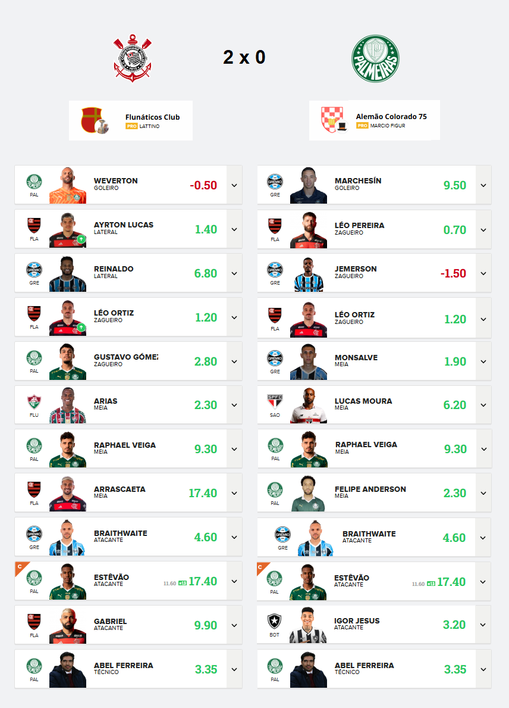

Campeonato de Cartola
A vitória no cartola é o sucesso do seu time!

Redação Cartola - 31/10/2024 - 11h41min
Decisão do "Alemão Colorado 75" de não escalar o meia flamenguista Arrascaeta no jogo contra o Juventude, preterido pelo são-paulino "Luciano Almeida", a jogar fora de casa contra o Criciúma, acabou custando uma pontuação abaixo da margem de abertura de placar (60pts), marcando 58pts contra os 75 construídos pela formação de caráter mais conservador montada pelo "Flunáticos Club", principalmente impulsionada pelos 17,4pts registrados por Arrascaeta.
Com o placar do primeiro jogo em favor do Corinthians, "Flunáticos Club" vai para a última partida da decisão podendo perder por até um gol de diferença. Já no caso do verdão, as chances de títulos começam a partir de uma vitória por dois gols de diferença. Para tanto o palestra terá também que se manter à frente do Corinthians na tabela do campeonato brasileiro, isso porque, conforme o regulamento, em caso de empate nos critérios, considerando dois clubes de mesma grandeza, leva o título aquele que tiver a melhor campanha no campeonato nacional. Neste momento, Palmeiras é o oitavo colocado, com 45pts, imediatamente à frente do rival Corinthians, na nona colocação, com 42pts.
